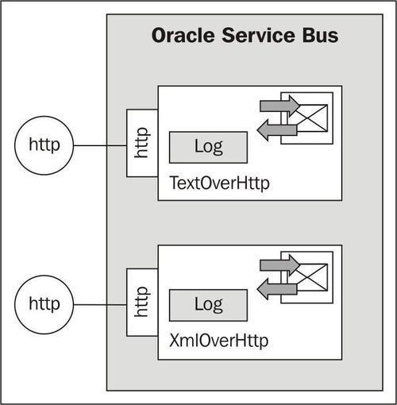
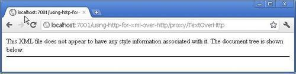
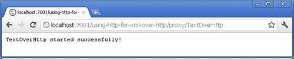

Instead of sending SOAP over HTTP, the HTTP transport can be used for doing simple messaging over HTTP. In this recipe, we will show how easy it is to implement a proxy service on the OSB accepting text/XML messages:

We will first create a proxy service that accepts any text-based messages over HTTP. In Eclipse OEPE, perform the following steps:
using-http-for-msg-over-http. proxy folder. proxy folder, create a new proxy service and name it TextOverHttp. LogStage. $body into the Expression field. Click OK.Next let's implement a similar proxy, but this time accepting only XML. In Eclipse OEPE, perform the following steps:
proxy folder, create a new proxy service and name it XmlOverHttp.We now have two proxy services in place, one accepting Text and the other XML. Let's test the behavior through the console. In the Service Bus console, perform the following steps:
Hello from OSB! into the Payload field and click Execute.<06.10.2011 08:06 Uhr MESZ> <Warning> <ALSB Logging> <BEA-000000> < [HandleMessagePipeline, HandleMessagePipeline_request, LogStage, REQUEST] <soapenv:Body xmlns:soapenv="http://schemas.xmlsoap.org/soap/envelope/"> Hello from OSB! </soapenv:Body>>
<message>Hello from OSB!</message> into the Payload field and then clicking OK.<06.10.2011 08:08 Uhr MESZ> <Warning> <ALSB Logging> <BEA-000000> < [HandleMessagePipeline, HandleMessagePipeline_request, LogStage, REQUEST] <soapenv:Body xmlns:soapenv="http://schemas.xmlsoap.org/soap/envelope/">< message>Hello from OSB!</message> </soapenv:Body>>
We can see that a proxy service using Text for the Message Type handles everything as plain text.
Now let's test the second service, the XmlOverHttp proxy service.
<message>Hello from OSB!</message> into the Payload field and then click OK.<06.10.2011 08:11 Uhr MESZ> <Warning> <ALSB Logging> <BEA-000000> < [HandleMessagePipeline, HandleMessagePipeline_request, LogStage, REQUEST] <soapenv:Body xmlns:soapenv="http://schemas.xmlsoap.org/soap/envelope/"> <message>Hello from OSB!</message> </soapenv:Body>>
We can see that a proxy service using Xml for the Message Type now really handles the message as XML and embeds it inside the<soapenv:Body> element.
This recipe showed how easy it is to send messages over HTTP. We have used Text as well as Xml for the Message Type of the Messaging Service Type of proxy service.
In the case of the Text type, the message is handled as text and any text will be accepted. If we send a text message with XML in it, then it is still handled as simple text. If we need to process the XML inside the proxy service, then the fn-bea:inlinedXML($body) method can be used to transform from text to an XML node.
In all cases, the message available in the $body variable is wrapped inside a<soapenv:Body> element, even though we are not using SOAP over HTTP.
Here we only used the Log action to write the content of the $body variable to the console. In real life, we would probably call another service through a business service, for example, to write the content to a file.
A Messaging Service typed proxy service together with the HTTP transport can be handy to start some processing without requiring the passing of parameters. In that case, a simple invoke on the Endpoint URI of the proxy service is enough to invoke the proxy service. This can be done with any HTTP method, such as GET.
To invoke the TextOverHttp proxy service, the following URI can be used directly from a browser: http://localhost:7001/using-http-for-xml-over-http/proxy/TextOverHttp:

The message appears because the interface on the proxy service is defined as one-way, so no answer is returned and therefore the browser cannot display anything.
If a status message should be shown, then the proxy service can also be changed to return a message:
TextOverHttp started successfully! into the Expression field.